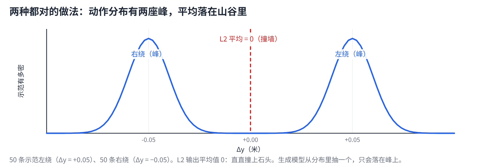
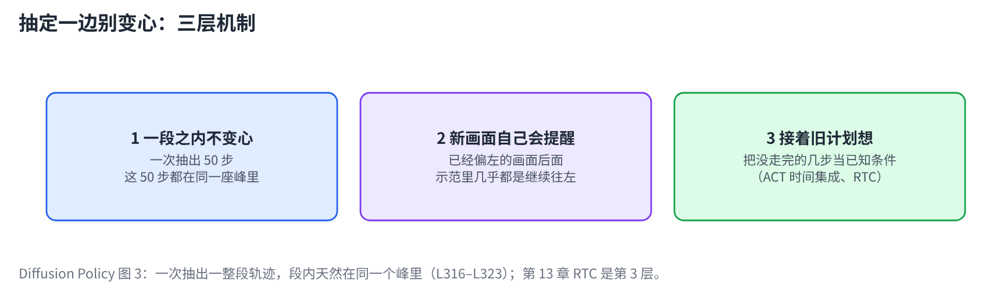
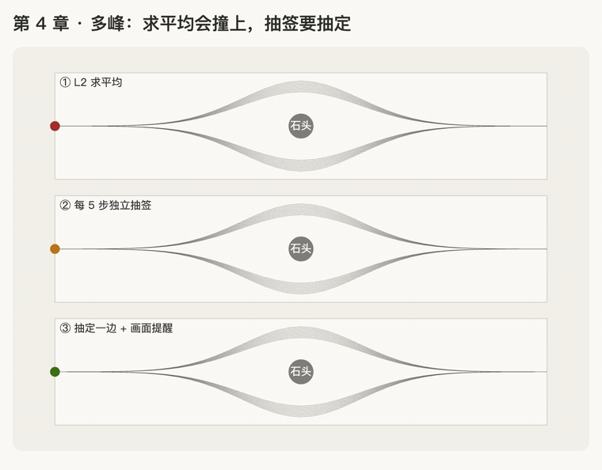

第 4 章 · 多峰（multimodality）：同一个情况，两种都对的做法
本地运行
git clone https://github.com/wikieden/vla-from-scratch
cd vla-from-scratch/code/notebooks
pip install jupyterlab torch numpy
jupyter lab ch04_multimodality.ipynb也可以下载后直接用 VS Code 打开 .ipynb 运行。需要 GPU 的章节在 Colab 里选「代码执行程序 → 更改运行时类型 → GPU」。
本章回答：为什么第 2 章那种"和标准答案比差多少"的训练方法，在机器人上会出怪招？为什么 Diffusion Policy、π0 要用生成模型来出动作？
讲解日期：2026-11-04 · 上一章：第 3 章 动作分块 · 下一章：第 5 章 VLM
对应原文：materials/text/papers/diffusion-policy-2303.04137.txt§4.1 L276 起（多峰）、L284–L292（从高斯噪声起步）、L316–L323（图 3：抽定一边）
本章缩写：L1 / L2 = 绝对值误差 / 平方误差；CVAE = Conditional Variational AutoEncoder（条件 / 变分 / 自编码器）；BeT = Behavior Transformer（行为 Transformer）；VLM = Vision-Language Model（视觉 / 语言 / 模型）；RT-1 = Robotics Transformer 1。全表见 appendix-glossary.md
讲解
第 1 步：两个都对的答案，平均起来是错的
白话类比：绕开路中间的石头
路正中间有块石头。你看过 100 段老司机的录像：50 段从左边绕，50 段从右边绕。两种都对。
现在让一个"只会求平均"的学生来学：左边一半、右边一半，平均下来就是……正中间直走，一头撞上石头。
机器人里的同一件事
第 2 章的训练方法是让模型的答案尽量接近人的答案（L1 / L2 损失）。如果同一个画面下，人有时这样做、有时那样做，模型为了让"平均差距"最小，就会输出几种做法的中间值，而中间值往往是哪种做法都不是的怪动作。
"同一个情况下，有好几种都对的做法"，叫多峰（multimodal）：把所有人的做法画成分布图，会出现好几座山峰（左边一座、右边一座），而不是只有一座。
注意：这里的 multimodal 和"多模态"（图像 + 文字）是同一个英文词，但意思完全不同。这里说的是动作分布有多个峰。
原文出处：Diffusion Policy §4.1 "Model Multi-Modal Action Distributions"（materials/text/papers/diffusion-policy-2303.04137.txt 第 276 行起）；图 3 的 Push-T 例子是 "the end-effector (blue) can either go left or right to push the block"（第 316–317 行）。

图 4-1 · 左绕、右绕各一半：L2 平均成 0，正好撞上石头。
第 2 步：不求平均，改成"抽一个"
解决思路：别让模型输出"一个最稳妥的答案"，而是让它学会整张分布图（哪里有山峰、每座山多高），用的时候从图上抽一个。抽到左边就往左绕，抽到右边就往右绕，永远不会抽到中间的山谷里。
白话类比：掷硬币选路
新手司机不再求平均，而是心里记住"左绕的人一半、右绕的人一半"。遇到石头时掷个硬币：正面左绕，反面右绕。每次都走一条真实存在的路线。
能"学分布、再抽样"的模型叫生成模型。机器人里用过的几种（后面几章逐个讲）：
| 做法 | 怎么表示分布 | 谁在用 | 在哪讲 |
|---|---|---|---|
| 分箱 + 分类 | 把 Δy 切成 256 格，输出每格的概率，再抽一格 | RT-1、RT-2、OpenVLA | 第 6 章 |
| CVAE | 额外输入一个随机数 z，不同 z 对应不同做法 | ACT | — |
| 扩散 / flow | 从一团随机噪声出发，一步步"推"成一个动作 | Diffusion Policy、π0 | 第 8 章 |
Diffusion Policy 的随机性来自起点：每次都从一团新的高斯噪声开始（diffusion-policy-2303.04137.txt 第 284–292 行），不同的起点会落进不同的山峰。
第 3 步：抽定了就别变心（mode commitment）
每次独立抽签，机器人会"一会儿左、一会儿右"，在障碍物前来回抖，最后哪边都没绕过去。这叫换峰抖动（mode switching）。要让它抽定一边就坚持下去，现在的系统靠三层：
| 层 | 怎么做到 | 出处 |
|---|---|---|
| 1. 一段之内不变心 | 一次抽出的是一整段 50 步的轨迹，这 50 步天然在同一个峰里 | Diffusion Policy 图 3："learns both modes and commits to only one mode within each rollout"；BET "fails to commit to a single mode due to its lack of temporal action consistency"（diffusion-policy-2303.04137.txt 第 316–323 行） |
| 2. 新画面自己会"提醒" | 往左走了几步之后，新画面里机器人已经偏左了；训练数据里长这样的画面，人后面全是继续往左。所以重新抽签时，左边的峰变得很高、右边的峰几乎消失 | 见题 3 |
| 3. 显式接着旧计划想 | 想新的一段时，把旧计划还没走完的那几步当成"已知条件"，新计划必须和它接上 | ACT 的 temporal ensembling（第 3 章）；第 13 章 RTC |

图 4-2 · 段内不变心、画面提醒、接着旧计划想。
动画演示：多峰：求平均会撞上，抽签要抽定

可交互版：animations/04-multimodality.html（用浏览器打开，可播放、单步、换随机数重来）。
怎么看：
- 灰色细线是 20 条示范：一半左绕、一半右绕，形成两座"峰"。
- ① L2 求平均：Δy 平均成 0，直直撞上石头（第 1 题）。
- ② 每 5 步独立抽签：一会儿左一会儿右（换峰抖动），在石头前来回拐，常常撞上（第 2 题）。
- ③ 抽定一边 + 画面提醒：第一次抽完后画面里"已经偏左（或偏右）"，模型学到的分布只剩那一座峰，一路坚持（第 3 题）。交互版多点几次"重新抽签"，③ 有时左有时右，但不会走中间。
练习与作答记录
题 1：机器人夹爪前面有个障碍物。人的 100 条示范里，50 条往左绕（第 2 位 Δy = +0.05），50 条往右绕（Δy = −0.05）。一个用 L2 损失训练、只会输出"最接近平均"的模型： 1. 它在这个画面下会输出 Δy 等于多少？ 2. 机器人会怎么样？
作答（2026-11-04，原话）：0，机器人这样就回从中间过去 ✓
点评：对。(+0.05 × 50 + (−0.05) × 50) / 100 = 0，模型输出 Δy = 0，直直往中间走，正好撞上障碍物。"从中间过去"就是撞上去。这就是求平均在多峰情况下的毛病：两个对的答案，平均出一个错的。
题 2：现在换成"抽一个"的模型。结合第 3 章的滚动重规划：每走 5 步就重新想一次、重新抽一次。如果每次都独立地掷硬币（50% 左、50% 右），机器人在绕障碍的过程中可能出现什么问题？
作答（2026-11-04，原话）：可能一会左边，一会右，造成动作抖动，当选择某个曲线后，后续抽卡应该尽量哦租一个分布，这样更合理 ✓
点评：对。问题叫换峰抖动（mode switching）；你提的"选定一条曲线后就坚持同一个峰"叫 mode commitment，正是 Diffusion Policy 和 RTC 追求的性质。（"哦租"按"用同一个"理解。）
题 3：机器人抽到"左绕"，已经往左走了 2 厘米。这时重新看一眼、重新抽签。模型里并没有"记住我上次选了左"的开关，为什么它这次抽到左边的概率会变得很高？用"训练数据里长这样的画面，人后来怎么做"来解释。
作答（2026-11-04，原话）：因为数据上走了左边数据都会继续走左边很少有换峰的，这是学出来的 ✓
点评：完全对，"这是学出来的"是关键。模型不需要额外的记忆开关：画面本身就带着"我之前选了左"的信息。训练数据里"已经偏左"的画面后面几乎都是继续往左，所以模型学到的分布在这种画面下只剩左边一座峰。这也是为什么第 2 章的复合误差和这里是同一个道理的两面：画面决定模型以为自己在哪条路上。
口诀
左绕对，右绕也对，平均一下撞上去；
不求平均抽一个，抽到哪条走哪条；
抽定一边别变心，一段之内、画面提醒、接着旧计划。
本章复习卡片
V08 多峰与求平均的毛病、V09 换峰抖动与 mode commitment（见 review.md）
附录 · 延伸阅读
留给以后深入学习用，不影响本章主线。★ 是建议先读的。
推荐阅读
| 读什么 | 读哪里 | 读它为了什么 |
|---|---|---|
| ★ Diffusion Policy §4.1 | diffusion-policy-2303.04137.txt L276–L323 |
多峰、抽定一边 |
| ACT 的 CVAE | act-aloha-2304.13705.txt |
另一种表示多峰的办法 |
| 第 15 章 OpenVLA-OFT | L1 取中位数 | 回归也不一定撞墙 |
| 《数学与实验统计》第 8 章 | 期望、MLE | 为什么 L2 学到的是平均 |
数学原理
- L2 的最优常数解是平均值：\(\arg\min_c \sum (a_i - c)^2 = \bar a\)。
- 多峰分布：概率密度有几个局部最大值；平均值可能落在密度很低的地方。
公式清单
| 公式 | 意思 |
|---|---|
| \(\arg\min_c \sum_i (a_i - c)^2 = \frac{1}{n}\sum_i a_i\) | L2 学到平均 |
| \(a \sim p(a \mid o)\) | 生成模型：从分布里抽一个 |
代码对照：把本章的数字用代码算一遍
纯 Python + NumPy，不需要 GPU。代码在仓库本地
vla-deep-dive/solutions/chapter-code/ch04_multimodality.py，配套测试tests/test_ch04.py：
bash cd vla-deep-dive/solutions/chapter-code uv run python ch04_multimodality.py uv run pytest tests/test_ch04.py
讲义 ↔ 代码：
| 讲义 | 写法 | 跑出来 |
|---|---|---|
| 第 1 步 | l2_answer([0.05, −0.05], [50, 50]) |
0（撞墙） |
| 第 2 步 | sample_answer(...) |
只会抽到 ±0.05 |
| 第 3 步 | switches(8, commit) |
独立抽签换峰 3 次；画面提醒 0 次 |
代码里才看得到的 2 件事：
switches里"画面提醒"被简化成"永远选第一次那边"；真实模型里是分布变成只剩一座峰。sample_answer用固定种子，换种子结果会变，但永远不会是 0。
自己改一改（不影响练习答案）：
- 把示范比例改成 70 / 30，看
l2_answer输出多少。 - 把重规划次数从 8 改成 20，看独立抽签平均换峰几次。